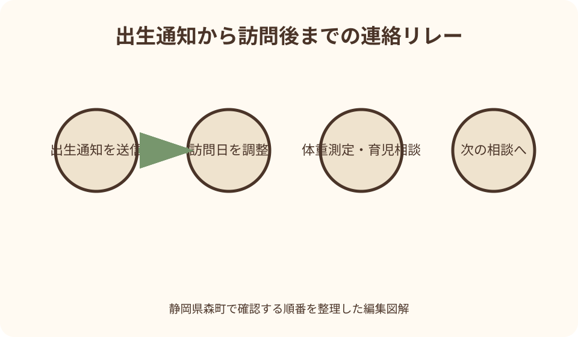
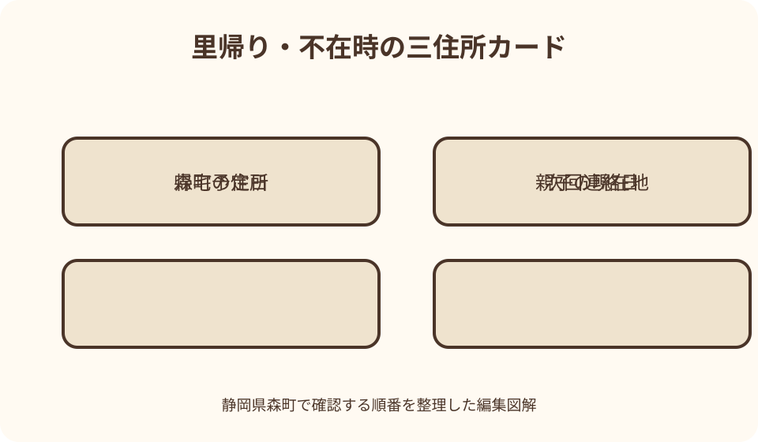

妊娠・子育て手続｜最終確認 2026-08-10
静岡県森町の赤ちゃん訪問｜出生通知・連絡時期・相談内容と里帰り時の対応
森町の赤ちゃん訪問は、生後4か月までの間に保健師・助産師が家庭を訪ね、赤ちゃんの体重測定や育児相談を行う機会です。出生後は新生児出生通知を早めに送り、町からの連絡を受けられる電話番号と、実際に親子が過ごす住所を正確に伝えます。ただし、訪問は診察や救急対応ではありません。日程調整、普段の育児相談、急な症状の相談先を分けて準備しましょう。

編集イラスト最初に結論：出生通知・日程連絡・緊急相談を分ける
森町の赤ちゃん訪問を受ける第一歩は、新生児出生通知を早めに送ることです。町は通知内容を、生後4か月までに行う赤ちゃん訪問の参考にすると案内しています。
通知を送れば訪問日時が自動的に確定するとは限りません。健康こども課こども家庭係からの連絡方法、訪問する住所、都合の悪い時間を確認し、家族の予定表へ記録します。
訪問では保健師・助産師が体重を測り、育児相談に応じます。授乳、睡眠、排せつ、泣き方、きょうだいとの生活、保護者の休息など、気になることを事前に箇条書きにして構いません。
一方、赤ちゃんや産後の本人に急な症状があるときは訪問の連絡を待ちません。日程調整の電話、日常の育児相談、医療上の緊急相談を三つの別経路として扱います。
森町の赤ちゃん訪問の対象と時期
森町公式は、赤ちゃん（新生児）訪問を生後4か月までの間に実施すると案内しています。出生日から数えていつ訪問になるかは、町との日程調整によって決まるため、一律の週齢を想定しません。
こども家庭庁も乳児家庭全戸訪問について、生後4か月までの乳児がいる全家庭を訪ね、子育て支援の情報提供や養育環境の把握を行う事業と説明しています。森町での具体的な実施方法は町の案内を優先します。
入院が長引く、退院後に里帰りする、森町へ転入したばかりなど、生後4か月までの通常日程で訪問しにくい事情は早めに伝えます。対象外だと自己判断して通知を止めないようにします。
訪問日が遅いから心配が軽い、早いから問題があるという意味ではありません。親子の退院時期や家庭の都合も関わるため、日程だけから健康状態や支援の必要性を推測しないでください。
新生児出生通知は出生後早めに送る
森町の『赤ちゃんが生まれたら』ページには、新生児出生通知をスマートフォンから申請できる入口があります。出生後早めの申請が案内されているため、退院後の荷物整理に埋もれないよう家族の担当を決めます。
通知では、赤ちゃんと保護者の基本情報、連絡先、滞在先などを正確に入力します。実際の入力項目は申請画面で確認し、分からない欄を推測で埋めず健康こども課へ尋ねます。
出生届と新生児出生通知は役割が異なります。出生届を住民生活課へ提出したことで、訪問用の通知もすべて完了したと思わず、それぞれの受付を確認します。
オンライン申請が難しい、端末が使えない、入力途中で止まる場合は、健康こども課こども家庭係へ電話します。申請できないことを理由に、町への連絡そのものを諦める必要はありません。
連絡時期と電話に出られない場合
町公式は出生通知を早めに送るよう案内していますが、通知後何日で連絡が来るかまでは明記していません。連絡期限を記事で作らず、しばらく連絡がない、訪問希望日が迫る場合は同係へ問い合わせます。
知らない番号に出られない家庭は、健康こども課の電話番号0538-86-6330を連絡先へ登録します。ただし発信番号が常に同じとは限らないため、不在着信や留守番電話の内容を確認します。
折り返すときは、保護者の氏名、赤ちゃんの氏名と生年月日、出生通知を送った日を伝えられるよう準備します。個人情報は相手が町の担当者であることを確かめてから伝えます。
連絡先を変更した、電話を受けにくい時間帯がある、日本語以外の説明が必要などの事情は先に伝えます。連絡が取れない状態を放置せず、使える連絡方法を町と決めます。
訪問日時を決めるときの伝え方
日程調整では、親子が森町の自宅に戻る日、1か月健診などの予約日、家族が同席できる候補を伝えます。候補日は一日だけでなく、複数用意すると再調整しやすくなります。
授乳や睡眠の時間は毎日変わるため、完全に静かな時間を選ぶ必要はありません。訪問中に授乳やおむつ替えが必要になってもよいか、気になる場合は連絡時に尋ねます。
同居家族が感染症にかかっている、来客が重なる、住宅工事があるなど訪問しにくい事情が生じたら、直前でも町へ相談します。無理に受け入れたり、無断で不在にしたりしないようにします。
訪問者の氏名や職種、予定時間を家族で共有します。国の実施要領は、訪問者が身分証を示すなど、市町村からの訪問者だと明確にすることを求めています。不安なら玄関を開ける前に所属を確認できます。

訪問前に用意する物と質問メモ
母子健康手帳は、出生時の記録や退院後の経過を一緒に見られるよう手元へ置きます。医療機関から渡された退院資料、体重や授乳の記録があれば、相談したい部分だけ取り出します。
体重測定に使う物や訪問場所の準備は、町からの連絡で案内を確認します。特別な器具や完璧な片付けを自己判断で用意するより、赤ちゃんを安全に寝かせられる場所を確保します。
質問は『授乳が心配』だけで終わらせず、回数、時間帯、困る場面、これまで医療機関から受けた説明をメモします。正確に数えられない項目は、分かる範囲で伝えれば構いません。
保護者自身についても、睡眠、食事、気分、痛み、相談相手の有無など、話したいことを別欄にします。赤ちゃんの訪問だから保護者のことは話せない、と遠慮する必要はありません。
訪問で行われる体重測定
森町公式は、訪問時に赤ちゃんの体重測定を行うと明記しています。測定結果はその時点の一つの情報であり、数字だけで成長の良否や病気を家庭で決める材料ではありません。
出生体重、退院時の体重、その後の測定値が分かれば母子健康手帳等で示します。測定機器や衣類、授乳直後かどうかなど条件が違うため、家庭用体重計との小さな差だけを比較しません。
増え方について説明を受けたら、次にどこで、いつ測るか、医療機関へ相談する目安があるかを確認します。訪問者の説明を家族へ伝えるため、日付と測定値、次の行動を記録します。
訪問の体重測定は医療機関の1か月児健診などに代わるものではありません。森町は1か月児健診を生後27日から6週未満に医療機関で受ける案内も出しているため、予約を別に管理します。
授乳・ミルク・睡眠・泣き方の相談
授乳では、母乳かミルクかを評価してもらう場ではなく、現在の方法で困っている場面を相談します。飲む回数、時間、むせ、吐き戻し、保護者の痛みなど、観察した事実を伝えます。
ミルクの量や作り方、授乳間隔を変更する必要があるかは、赤ちゃんの状態によって異なります。訪問者や医療機関へ確認し、ネット上の平均量だけで増減を決めません。
睡眠や泣き方は家庭によって受け止め方も違います。何時ごろ特に困るか、抱っこを交代できる人がいるか、保護者が連続して休める時間があるかまで共有します。
相談の結果、追加の確認が必要になった場合は、連絡先と期限を聞きます。訪問だけで解決しないことがあっても失敗ではなく、医療機関や継続相談へつなぐことが役割の一つです。
保護者の心身と家族の支援も話してよい
産後は赤ちゃん中心の生活になり、本人の休息や食事が後回しになりがちです。眠れない、涙が出る、不安が強い、家事や育児を一人で抱えているなどの状況も訪問で伝えます。
気分の変化だけから病名を決めることはできません。つらさがあるときは我慢の程度を比べず、いつから、生活にどのような影響があるかを保健師・助産師や受診先へ話します。
同居家族は、本人に代わって結論を出すのではなく、休めた時間、食事、家事の分担、夜間に交代できるかを具体的に共有します。本人が一人で話したい内容がある場合は、その時間も尊重します。
森町には産婦訪問や産後ケア事業の案内もあります。赤ちゃん訪問と同じものではないため、追加の支援を希望するときは対象、申請、費用、利用時期を健康こども課へ確認します。
訪問と産後ケア事業を混同しない
赤ちゃん訪問は、生後4か月までの家庭訪問として、体重測定や育児相談を行う町の取組です。産後ケアは、宿泊、通所、居宅訪問などで休息や授乳・育児支援を受ける別の事業です。
赤ちゃん訪問を受けたから産後ケアを使えない、または自動的に利用できるという関係ではありません。産後ケアを希望する場合は、森町に住民票があることなど現行の対象条件を確認します。
町公式は、産後ケアの居宅訪問型を含む複数の利用方法と、施設によって異なる自己負担を案内しています。赤ちゃん訪問とは費用や申込みが異なるため、予約前に最新資料を読みます。
乳腺炎が疑われる痛みや発熱など、受診や緊急処置が必要な場合は産後ケアの対象外になる旨も町は示しています。どの事業を使うかより、必要な医療相談を先に行います。
里帰り中に森町の自宅へいない場合
出産後に町外の実家へ里帰りしている場合は、新生児出生通知へ実際の滞在状況を正確に記し、健康こども課へ帰宅予定日を伝えます。住民票だけを見て森町の自宅へ訪問日を決めないようにします。
里帰り先の自治体で訪問を受けられるか、森町へ戻ってから調整するかは、自治体間の取扱いと滞在期間によります。どちらも可能と決めつけず、森町と里帰り先の母子保健担当へ確認します。
里帰り先で別の訪問を受けた場合は、訪問日、担当自治体、相談内容、体重測定値、次の支援を記録します。その結果を森町へ伝え、森町での訪問や相談がどうなるか案内を受けます。
帰宅日が延びた、予定より早く森町へ戻った、滞在先が変わった場合は連絡します。生後4か月の時期が近づいてから一度に説明するより、変更時点で共有した方が調整しやすくなります。
不在・キャンセル・長期入院のとき
予定日に不在となる場合は、分かった時点で健康こども課へ連絡します。無断不在にすると、町は親子の状況を確認できず、再連絡に時間がかかるためです。
急な受診や家族の体調不良で当日キャンセルする場合も、理由を詳しく話せないときは日程変更を希望する旨だけ先に伝えます。落ち着いてから新しい候補日を相談できます。
赤ちゃんが入院中なら、退院予定が未定でも町へ知らせます。医療機関で継続して確認されている内容と、退院後の家庭生活で相談したい内容は分けて整理します。
国の実施要領では、訪問できなかった家庭についても引き続き状況把握に努める考えが示されています。連絡が重なることを責められていると受け止めず、現在の状況と連絡可能な日を返します。

森町へ転入した直後に赤ちゃんがいる場合
生後4か月までに森町へ転入した家庭は、転出元で出生通知や訪問が済んでいるか、未実施かを健康こども課へ伝えます。転入したことで情報が自動的にすべて引き継がれるとは限りません。
すでに訪問を受けていても、森町で使える相談先や健診の受診票を確認する意味があります。訪問記録、母子健康手帳、転出元から渡された案内を手元に置いて電話します。
まだ訪問を受けていない場合は、赤ちゃんの生年月日、転入日、現在の住所、連絡先、里帰りの有無を伝え、森町での日程調整を相談します。生後4か月が近い場合はその点も明示します。
4か月を過ぎている、または入院等で通常時期に訪問できなかった場合も、相談先がなくなるとは考えません。こども家庭センターや乳幼児の健康相談など、現在使える入口を尋ねます。
赤ちゃん訪問と乳児健診の予定を並べる
赤ちゃん訪問は自宅での相談、1か月児健診は医療機関で行う健康診査であり、どちらか一方で代用できるものではありません。予定表では別の行に記載します。
森町公式は1か月児健診の対象を生後27日から生後6週未満とし、出生手続後に保健福祉センターで受診票を交付すると案内しています。予約と受診票の準備を訪問日とは別に確認します。
新生児聴覚スクリーニング検査、産婦健診、予防接種もそれぞれ時期と受診票が異なります。訪問者へ予定を見てもらい、抜けている確認先がないか質問できます。
健診結果に関する疑問は、結果を出した医療機関へ相談します。訪問で測った体重と健診値が違う場合も、数字だけで異常と結論づけず、測定条件と経過を含めて確認します。
急な症状は訪問日を待たない
赤ちゃん訪問は予定を調整して行う育児支援で、救急診療ではありません。赤ちゃんの様子がいつもと明らかに違う、呼吸や意識などに強い不安がある場合は、訪問日まで待たず医療機関等へ連絡します。
静岡県のこども救急電話相談は、急な発熱やけがなどで受診すべきか迷う保護者に、看護師や小児科医が助言する窓口です。2026年8月確認時点で毎日24時間、局番なしの#8000が案内されています。
IP電話等からは054-201-9910が県公式に掲載されています。電話相談は診療ではなく、一般の育児相談用でもありません。受診先の案内や緊急度を考える補助として利用します。
明らかに重症の場合は119番を利用するよう県と森町が案内しています。『訪問で見てもらう予定だから』と待たず、症状を言葉で説明しにくいときも、現在の様子と変化した時刻を伝えます。
訪問後に残す短い記録
訪問後は、訪問日、赤ちゃんの月齢、測定値、相談したこと、受けた説明、次の連絡先を一枚にまとめます。会話をすべて書き起こす必要はありません。
次の行動には期限を付けます。医療機関へ電話する、1か月児健診を予約する、健康相談の日程を見る、家族が休息を交代するなど、担当者も記載します。
母子健康手帳へ何を記録するかは訪問者の案内に従います。家族用メモを健診記録欄へ大量に書き込まず、公式記録と生活メモを分けると後で読み返しやすくなります。
訪問者から案内された制度は、対象や費用を町公式で再確認します。話の一部を家族が記憶違いしても、URLと問い合わせ先が残っていれば確かめ直せます。
赤ちゃん訪問の良い点
良い点は、外出の負担が大きい生後早期に、保健師・助産師へ自宅の生活状況を見せながら相談できることです。窓口では伝わりにくい寝床や家事動線の悩みも話せます。
体重測定だけでなく、授乳、睡眠、保護者の休息、家族の支援などを同時に整理できます。一つの悩みを単独で見るより、毎日の流れの中で次の相談先を考えられます。
地域の子育て支援や健診の情報を知る入口にもなります。こども家庭庁が示す全戸訪問の目的にも、情報提供と家庭の状況把握が含まれています。
困り事が小さいうちに相談しておけば、追加の健康相談、産婦訪問、産後ケアなどを比較できます。訪問一回ですべて解決するのではなく、町との連絡経路ができる点に価値があります。
町の案内へ注文したい点
注文したい点は、出生通知ページと赤ちゃん訪問の内容が別ページに分かれ、初めての家庭には通知後の連絡順が見えにくいことです。送信完了から日程確定までの標準的な流れが一画面にあると安心できます。
里帰り、長期入院、転入、不在時の取扱いも町公式本文では詳しく示されていません。各事情で最初に伝える項目と、連絡先を例示した案内が望まれます。
訪問で相談できる内容と、医療機関や救急電話へ連絡すべき内容の境目も明確だと実用的です。保護者が迷ったときの連絡先を、訪問案内と一緒に渡す方法が考えられます。
訪問者の職種、所要時間、当日の持ち物、同席者の可否が事前案内にまとまれば、家庭側の準備を減らせます。現状は、個別の日程連絡時に遠慮せず確認してください。
不安が強いときの代案・結論
代案・結論として、訪問日まで待つのがつらい場合は、健康こども課こども家庭係へ先に電話します。赤ちゃん健康相談やオンライン相談など、訪問以外の相談方法が使えるか尋ねます。
自宅へ人を迎えることに不安がある場合は、その理由を町へ伝えます。訪問者の身分確認、同席者、部屋、時間帯、別の相談方法について、可能な調整を相談します。
里帰り先から戻る日が決まらない場合は、帰宅確定まで連絡を止めず、現在地と次回連絡日を共有します。里帰り先自治体への依頼が可能かも両自治体へ確認します。
訪問対象時期を過ぎて気付いた場合も、相談を諦めません。森町こども家庭センター、乳幼児の健康相談、医療機関など、子どもの月齢と現在の悩みに合う入口を案内してもらいます。
大石の視点：自宅に来てもらえる支援を生活動線の点検にする
大石の視点では、赤ちゃん訪問は部屋のきれいさを採点される時間ではありません。親子が実際に過ごす場所で、無理のある動線や頼れる人の少なさを言葉にする機会です。
森町では町なかと北部の山間地で、買物や医療機関までの移動条件が違います。赤ちゃんを連れて外出する前に、送迎できる家族、車が使えない日、悪天候時の代替を相談します。
住まいを見る仕事の立場からは、段差、夜間の照明、冷暖房、来客動線、駐車場所なども産後の負担に関わります。大掛かりな改修を急がず、まず危険な物をどけ、手伝う人の動きを決めます。
家族が訪問へ同席するなら、質問を代わりに話すだけでなく、夜間の交代や食事準備を一つ引き受ける約束まで落とし込みます。支援情報を聞いて終わらず、翌日からの生活へ反映します。
図解案1：出生通知から訪問後までの連絡リレー
一つ目の図解は、出産施設、家庭、森町健康こども課、訪問者、次の相談先を円形のリレーで結びます。最初のバトンは新生児出生通知です。
家庭から町へは、赤ちゃんの生年月日、連絡先、実際の滞在先、里帰り予定を渡します。町から家庭へは訪問候補日と訪問者の情報を返します。
訪問当日は母子健康手帳、質問メモ、体重測定、育児相談を中央に置きます。訪問後は、1か月児健診、健康相談、産後ケアなど必要な行き先へ矢印を分けます。
円の外側には救急の赤線を独立させます。急な症状は通常リレーを通らず、医療機関、#8000、明らかな重症時の119番へつなぐ図にします。
図解案2：里帰り・不在時の三住所カード
二つ目の図解は、住民票のある森町住所、現在親子がいる里帰り先、訪問を希望する場所を三枚の住所カードで示します。同じ住所なら重ね、異なれば離します。
各カードに滞在開始日、帰宅予定日、連絡の取れる電話、受けた訪問の有無を書きます。町がどこへいつ連絡すべきかを一目で把握できます。
里帰り先で訪問済みなら、訪問日、測定値、相談結果の記録を森町へ戻す矢印を描きます。未実施なら両自治体へ確認する分岐を置きます。
長期入院の場合は病院カードを追加し、退院予定が未定でも森町へ状況連絡する線を引きます。訪問できない期間を空白ではなく、次回連絡日として管理する図です。
家族で使う当日チェックリスト
訪問前は、日時、訪問者の所属、家族の同席、母子健康手帳、質問メモを確認します。赤ちゃんの生活を訪問に合わせて無理に変えず、普段の様子を話せるようにします。
訪問中は、測定値だけでなく、その説明と次の確認時期を聞きます。分からない言葉はその場で尋ね、家族が勝手に意味を補わないようにします。
保護者の相談欄には、睡眠、食事、痛み、気分、家事、支援者を書きます。赤ちゃんの相談欄とは分け、どちらも次の連絡先まで確認します。
訪問後は、次の行動を一つずつ予定表へ入れます。受診が必要かどうかは医療者へ確認し、家族は送迎、電話、休息確保など具体的な役割を選びます。
まとめ：今日からできる四つの準備
第一に、森町公式の新生児出生通知を出生後早めに送り、送信日を記録します。入力が難しい場合は健康こども課こども家庭係へ電話します。
第二に、町から連絡を受けられる電話番号と、親子が実際にいる住所を確認します。里帰り、不在、入院、転入があれば、その期間も伝えます。
第三に、母子健康手帳と質問メモを用意し、赤ちゃんの体重・授乳・睡眠だけでなく、保護者の休息や家族の支援も相談項目にします。
第四に、訪問と緊急相談を分けます。この記事は2026年8月10日に一次情報を確認して作成しました。実施方法は森町へ、急な症状は医療機関や県の相談窓口へ最新情報を確かめてください。
公式情報・確認先
掲載内容は次の一次情報を基礎に整理しました。営業、料金、催し、交通は変わるため、出発前または手続き前にリンク先で最新情報を確認してください。
- 赤ちゃんが生まれたら（出生時の手続き）（静岡県森町、2026-08-10確認）
- 赤ちゃんが生まれたら（産婦健診等）（静岡県森町、2026-08-10確認）
- 育児（静岡県森町、2026-08-10確認）
- 妊娠・出産（静岡県森町、2026-08-10確認）
- 森町こども家庭センター（静岡県森町、2026-08-10確認）
- 病気のとき（静岡県森町、2026-08-10確認）
- よくわかる子ども・子育て支援新制度（こども家庭庁、2026-08-10確認）
- 生後4か月までの全戸訪問事業（こんにちは赤ちゃん事業）（厚生労働省、2026-08-10確認）
- 静岡こども救急電話相談（#8000番）（静岡県、2026-08-10確認）